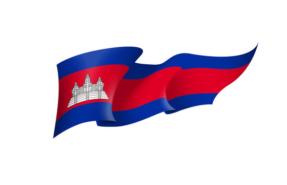
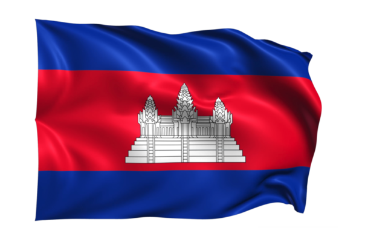

សូមស្វាគមន៍ការចូលទស្សនា
វេបសាយដំបូងរបស់ខ្ញុំ
ខ្ញុំបាទឈ្មោះ យ៉ិន ខុនឌី ជានិសិ្សតនៅសាកលវិទ្យាល័យបៀលប្រាយ ខេត្តបន្ទាយមានជ័យ កំពុងសិក្សា ឆ្នាំទី២ ឆមាស១ ក្នុងមហាវិទ្យាល័យវិទ្យាសាស្រ្តនិងបច្ចេកវិទ្យា
ជំនាញ៖ ។ ខ្ញុំបាទជាកូនទី១ (កូនច្បង) នៅក្នុងគ្រួសារ ដែលមានបងប្ងូនបង្កើត ២នាក់។
សូមស្វាគមន៍វគ្គសិក្សាអំពីមូលដ្ឋាន
ភាសាកូដ HTML , CSS and Java Script